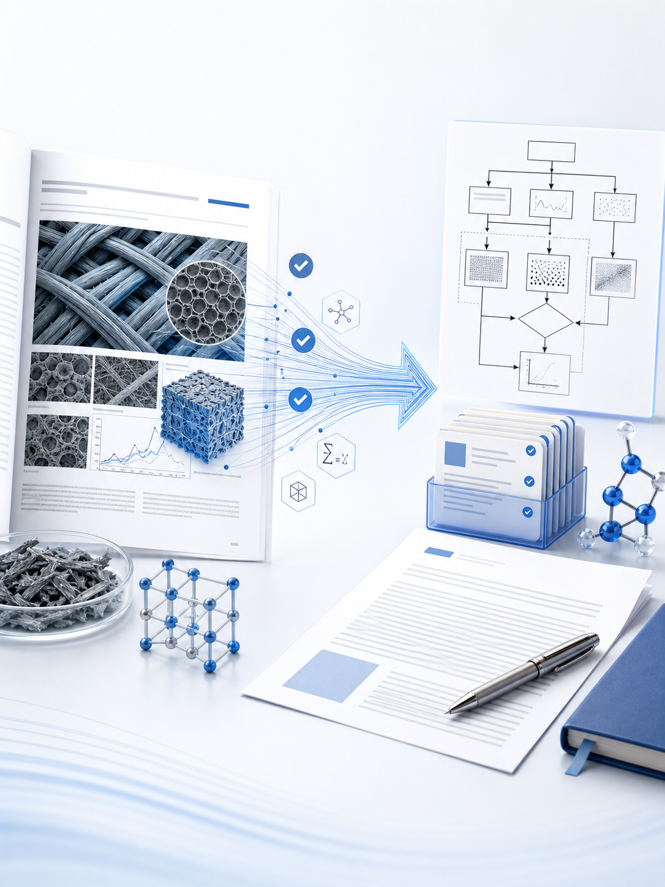

整体8 Steps
覆盖论文全链路
从研究问题、检索计划、文献评分、PDF 下载，到 Zotero 整理、证据化写作、引用审计和保守润色。
more-paper-workflow 是一套学术论文全流程 Skill：帮你把定题、大纲、检索、PDF、Zotero、写作、图表、引用审计和润色连成可追溯链路。
从研究问题、检索计划、文献评分、PDF 下载，到 Zotero 整理、证据化写作、引用审计和保守润色。
有 DOI、PDF、Zotero 文库、证据包或章节草稿时，不必从头重跑；但证据边界和质量门不跳过。
输出研究工件、证据矩阵、图表产物、公式审计、DOCX 检查和修订台账，状态可以回查。

从 PDF 证据提炼方法架构，生成可审阅、可投稿的黑白流程图。